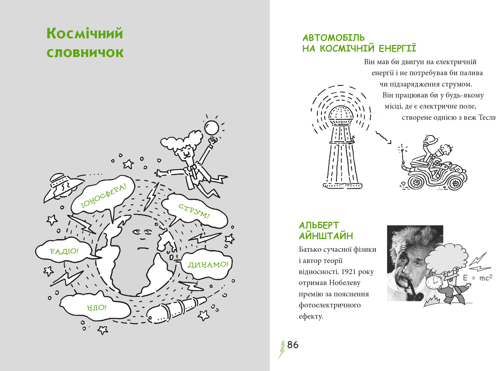
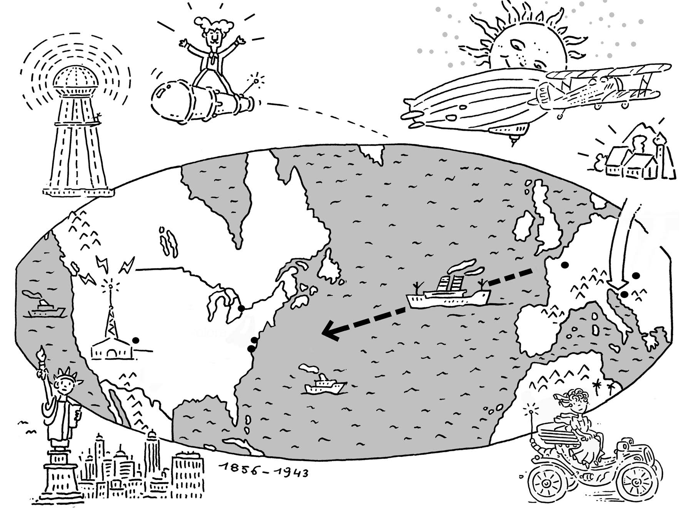
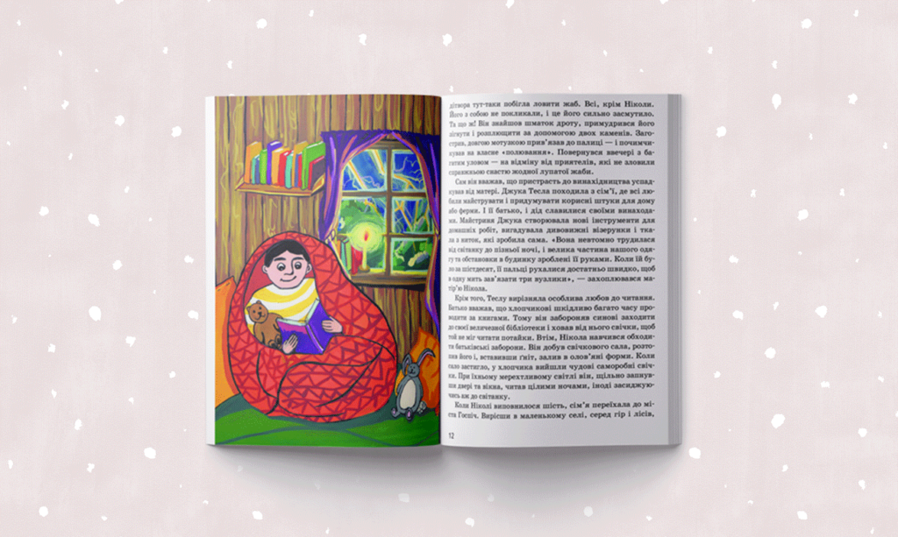

У новому циклі публікацій «Книжки пояснюють» ми розповідаємо про сучасні пізнавальні видання для дітей і підлітків. Вони присвячені видатним особистостям, великим винаходам, явищам природи, флорі і фауні та різним наукам. У сьогоднішньому огляді – книжки, присвячені Ніколі Теслі, видатному винахідникові в галузі електрики, магнетизму та електротехніки.
Згадайте свої уроки фізики у школі. Що вам не подобалося? У 7-9 класах мені бракувало мотивації й живого інтересу. Багатьом учням досить важко по-справжньому зацікавитися законами механічного руху, тепловими двигунами чи паралельним і послідовним з’єднаннями провідників. Звісно, якщо це не їхня пристрасть змалечку. Те, наскільки цікаві й важливі подібні теми, більшість із нас розуміє вже в дорослому віці.
Утім, усе має зовсім інший вигляд, якщо учням трапився талановитий учитель фізики. Або ж якщо вони черпають інтерес із мотиваційної літератури, яка вміє цікаво й зрозуміло пояснити складні речі. Спрацьовує психологічний закон: щойно дитина самостійно пробиває стіну нерозуміння й вигукує «Еврика!», її охоплює інтелектуальний азарт.
У цьому огляді я хочу розповісти про три книжки, присвячені винахідникові Ніколі Теслі. Вони в захопливий спосіб торкаються багатьох тем зі шкільної програми. Також це гарні зразки біографічної літератури, здатні надихати дітей і дорослих.
Лука Новеллі. Тесла та машина на космічній енергії
Енергоощадність та альтернативні джерела енергії
КУПИТИ
Італійський письменник і художник Лука Новеллі написав і намалював серію книжок для дітей про видатних науковців – Галілея, Ейнштейна, Дарвіна та інших. Це біографії, адаптовані так, що їх можуть читати діти від 8-9 років. Верхньої вікової межі у його книжок немає – дорослим вони цікаві теж.
Головні герої у книжках Новеллі розповідають про себе самі. Цей прийом наближає «далеких і незбагненних геніїв» до дитини, дозволяючи збудувати довірливу розмову на рівних. Читач може краще засоціювати себе з персонажем, а отже – глибше пережити текст і більше з нього почерпнути.
Книжка Луки Новеллі максимально залучає прийоми розважальної літератури, щоб зацікавити недосвідченого читача. Ілюстрації, що поєднують елементи коміксів і карикатур, тут не менш важливі за текст. Вони задають правильний настрій, показуючи, що читати про науковців – не нудно чи складно, а весело, легко й захопливо. Наприкінці книжки подано словничок термінів.
«Тесла та машина на космічній енергії» не пояснює, як зібрати радіо чи з чого складається електродвигун. Це було б досить складно зробити для обраної вікової групи. Але ця книжка цілком здатна надихнути юного читача – відразу чи трохи згодом – узяти до рук іншу книжку, в якій будуть усі потрібні пояснення.
Що робить ця книжка:
- Розповідає біографію Ніколи Тесли для дітей від 8-9 років;
- Пояснює, що саме винайшов Тесла та як його винаходи змінили історію;
- Робить незбагненного генія близьким і зрозумілим дитині;
- Показує, що наука – захоплива й дотепна, а читати про науковців – весело;
- Кумедні ілюстрації сприяють кращому розумінню та запам’ятовуванню.
Ольга Опанасенко. Нікола Тесла
Нікола Тесла. Видатні особистості. Біографічні нариси для дітей - Ольга Опанасенко
КУПИТИ
Українське видавництво ІРІО кілька років тому започаткувало серію «Видатні особистості. Біографічні нариси для дітей». Історію життя Ніколи Тесли для неї написала журналістка Ольга Опанасенко, авторка раніше опублікованої в цій же серії біографії Блеза Паскаля.
З різних джерел, зокрема й автобіографії Тесли, авторка добирає найцікавіші та найяскравіші епізоди і компонує їх у послідовну, розмірену й детальну розповідь, зрідка перемежовану, на жаль, суто декоративними ілюстраціями.
Ані Лука Новеллі, ані сам Тесла (в автобіографії, про яку буде сказано нижче), не мають змоги в межах обраних ними форматів детальніше зупинятися на якихось незрозумілих моментах чи термінах. Але понад сто сторінок цього видання дають змогу Опанасенко розжувати й розкласти по поличках усе, що може здатися дитині заскладним. Зроблено це так органічно й талановито, що хочеться відразу ж замовити письменниці який-небудь альтернативний підручник чи посібник для школи.
«Нікола Тесла» – це чітко витриманий формат нон-фікшн для читачів середнього шкільного віку (і старших), зі списком використаних джерел, рекомендованої літератури та іншими атрибутами поважної пізнавальної книжки.
Але головна заслуга даного видання – це створення літературного «байопіку»: у ньому з кінематографічним масштабом зображено непересічну особистість, яка може надихати і мотивувати людей різного віку, талантів і професій.
Що робить ця книжка:
- Дає детальну і ґрунтовну біографію Ніколи Тесли для дітей від 9-10 років
- Зрозуміло пояснює фізичні явища і складні терміни;
- Правильно розставляє акценти: жоден талант не обернувся на генія без зусиль, наполегливості й невтомної праці;
- Провокує до спільного родинного читання.
Нікола Тесла. Мої винаходи. Автобіографія
"Мої винаходи", Тесла Нікола
КУПИТИ
1919 року американський науково-технічний щомісячник Electrical Experimenter розпочав публікувати цикл статей Ніколи Тесли. У них винахідник розповідав про своє життя, погляди та відкриття. Згодом ці публікації зібрали під однією палітуркою й видали друком як автобіографію Тесли.
Свої статті Тесла адресував передусім юнацтву, яке було основною аудиторією журналу. Тож від докладно зупинявся на тому, які чинники сформували його як особистість, інженера-винахідника й мислителя. Тесла відверто розповідає не лише про перешкоди, які йому довелося здолати на шляху до омріяної професії, але й про свої хвороби та численні дивацтва. До того ж, він робить це з гумором та м’якою іронією, що прихиляє до нього читачів.
Автобіографія Тесли – це нагода почути його «живий голос», зрозуміти хід думок і прагнень людини, що була одночасно і суголосною своєму часові, і випереджала його. Це також нагода здивуватися точності внутрішнього барометра Тесли. Він не лише провістив чимало винаходів майбутнього, як-то бездротовий зв’язок, але й зробив точні передбачення щодо історичних катаклізмів ХХ століття – ядерної зброї, тоталітарних режимів, холодної війни.
Що робить ця книжка:
- Показує Ніколу Теслу зсередини;
- Розповідає, як жили, про що розмірковували та мріяли люди кінця ХІХ – початку ХХ століття;
- Доводить, що геній-винахідник може бути нездарою-бізнесменом;
- Озвучує міркування та прогнози, від яких стає трохи моторошно;
- Демонструє численні фото Ніколи Тесли та його видатних експериментів.